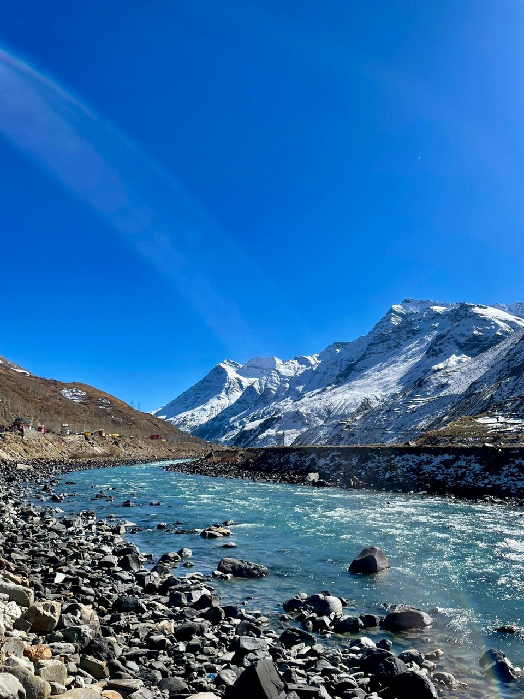

This safari follows the ancient Trans-Himalayan trade route to remote villages and monasteries, from Delhi via Shimla to the Sangla valley in Kinnaur, then into the stark Spiti Valley, with stops at Tabo, Kaza and Dhankar Gompa and the high village of Kibber, before continuing into Ladakh.
Drive to Shimla; evening on the Mall Road.
Indian Institute of Advanced Studies and the Jakho temple.
Rampur palace en route; the centuries-old Bhimakali temple.
Along the Hindustan-Tibet road above the Sutlej.
Kamru village and fort; Kinner Kailash views.
Via Nako village on its lake; the thousand-year-old Tabo monastery.
Lalung and Dhankar gompas en route.
Ki monastery and Kibber, one of the world's highest villages.
Fine views of the CB ranges from the pass.
Camp at Sarchu.
Over Tanglang La onto the high Tibetan plateau; three days to explore Leh.
The world's highest motorable road.
Flight to Delhi.